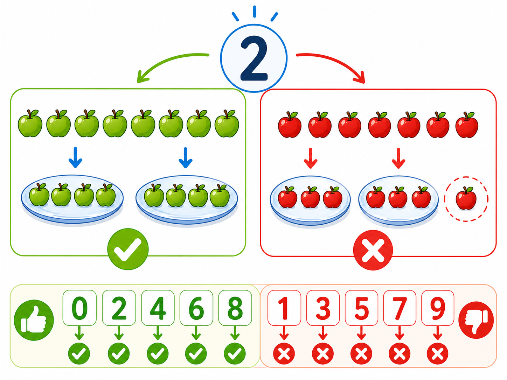

Co to jest? Що це?
Liczba dzieli się przez 2, gdy ostatnia cyfra jest parzysta.
Число ділиться на 2, коли остання цифра парна.
Jak w szkole? Як у школі?
Końcówka 0,2,4,6,8 → tak. Nie musisz dzielić całej liczby.
Кінець 0,2,4,6,8 → так. Не треба ділити все число.
Przykład z życia Приклад з життя
Numer domu kończy się na 6 — parzysty, dzieli się przez 2. Szybki test!
Номер будинку кінчається на 6 — парний, ділиться на 2. Швидкий тест!
końcówka 0,2,4,6,8